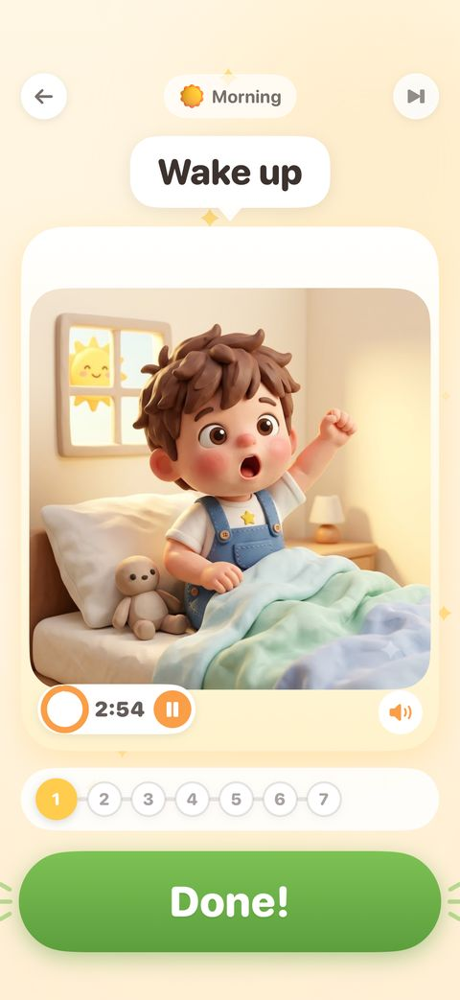
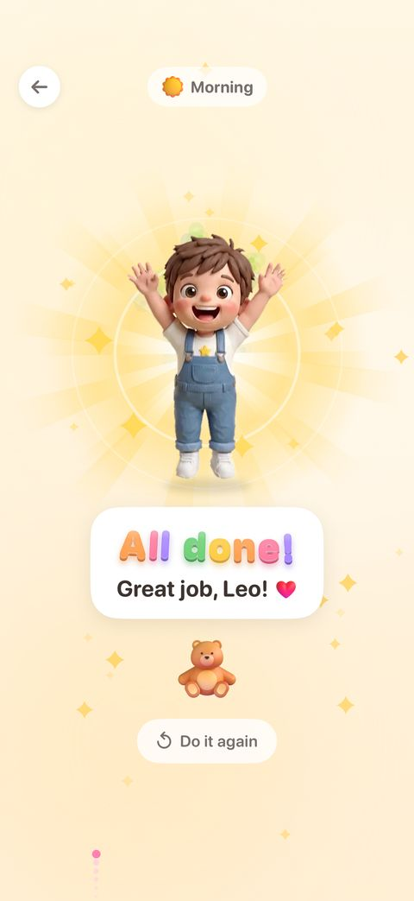
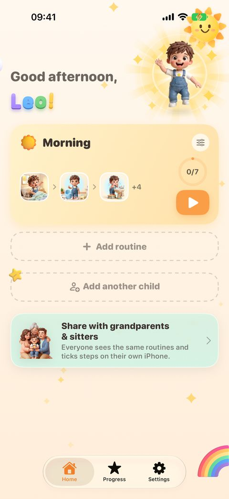
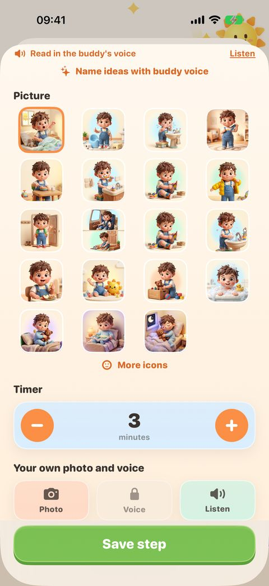
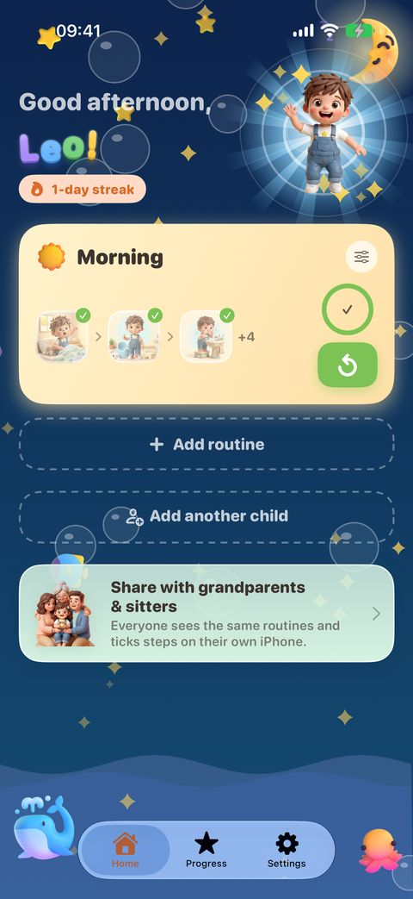

Picture routines your toddler follows on their own
Tiny Steps is an iPhone app of picture routines that children aged 2–6 follow on their own, read aloud by a child-voice buddy. Morning, bedtime, potty and out-the-door, without the battles.
Get Tiny StepsFree on the App Store for iPhoneNo account, no ads, no tracking. Free to start.


How it works



Made for little ones, easy for grown-ups
For your child (2–6)
- Big pictures and a visual schedule, no reading needed
- Steps read aloud in a cheerful child voice
- Gentle countdown timer for each step
- Cheers, stars and a celebration at the end
For you
- Ready-made routines: Morning, Bedtime, Leaving the house, After daycare
- 68 voiced step ideas, or snap a photo of your child doing the step
- Weekday and weekend plans with a reminder
- Grown-up areas behind a grown-up check
- Premium: more children, unlimited routines, family sharing with partners, grandparents and sitters, and your own voice recordings (yearly or one-time lifetime)
Questions parents ask
How do I get my toddler to follow a morning routine?
Keep it to 3–8 short steps in the same order every day, show each step as a picture, and celebrate when it is done. Tiny Steps shows one big picture at a time, reads the step aloud in a child's voice, runs a gentle timer and ends with a celebration and a star. See our toddler routine charts by age for example steps.
What is a visual schedule for toddlers?
A visual schedule is a routine shown as pictures instead of words, so children who cannot read yet can see what comes next. Tiny Steps is a visual schedule app for iPhone made for ages 2–6.
Is Tiny Steps free?
Yes. The free version includes one child and one routine with all the pictures, voices, timers and stars. Premium adds more children, unlimited routines, family sharing and your own voice recordings, as a yearly plan or a one-time lifetime purchase.
Can grandparents or a babysitter use the same routine?
Yes. With Premium you can share routines through iCloud, so partners, grandparents and sitters see the same routine on their own iPhone.
Does Tiny Steps collect my child's data?
No account, no ads and no tracking. Routines, photos and recordings stay on your iPhone and in your own iCloud. Details are in the privacy policy below.
Privacy Policy
Effective 16 November 2026 · Developer: Hau HC (Vietnam) · Contact: hauhc93@gmail.com
Tiny Steps is made for parents and caregivers of young children. We built it to collect as little as possible: no account, no ads, no analytics, no tracking.
What stays on your devices and in your iCloud
- Children's names and buddy choice, routines, steps, photos (chosen from your library or taken with the camera), voice recordings, schedules, reminders and progress are stored on your iPhone and synced with your own iCloud account (Apple CloudKit).
- We (the developer) cannot see this data. It is shared only with people you invite through iCloud sharing (for example grandparents or a sitter), and you can stop sharing at any time.
- Reminders are local notifications created on your iPhone.
- "AI ideas" for new routines are made on your iPhone by Apple's on-device model when available; nothing is sent to us.
Buddy voice for your own step names (Premium, optional)
- If you turn this on, the step name only (for example "Put on boots") is sent to Google's Gemini service through Google Firebase to create the buddy's voice for that step.
- Your child's name, photos, recordings and other data are never sent.
- It is off until a grown-up agrees in the app, and can be turned off any time in Settings › Privacy. Please don't type personal details into step names.
- Firebase App Check is used so only the genuine app can make these requests. Google processes the request under the Gemini API terms and Google Privacy Policy; on our paid plan Google does not use it to improve its products.
Purchases
Premium is sold through the App Store. Apple handles payment; we only receive confirmation that Premium is active on your device.
Children
Grown-up areas (Settings, editing, purchases, links) are behind a grown-up check. We do not knowingly collect personal information from children, and we do not show ads or use third-party analytics.
Deleting your data
Delete a child or routine in the app, or delete the app and remove its data in iPhone Settings › [your name] › iCloud › Manage Storage. Data shared with you by another family stays in their iCloud.
Changes
If this policy changes we will update this page and the date above. Questions: hauhc93@gmail.com.
Help & Support
Premium doesn't show after buying or on a new iPhone
Open Settings in the app (grown-up check) › Premium › Restore purchases, signed in with the same Apple ID.
Routines don't appear on my other iPhone
Make sure both iPhones use the same Apple ID with iCloud Drive turned on, then open the app and wait a moment on Wi-Fi. For grandparents or sitters, use Share with grandparents & sitters and have them open the invite link.
The buddy voice isn't made for my own step name
This needs Premium, an internet connection and the switch in Settings › Privacy. Without it, your own recording or the phone voice reads the step.
Contact
Email hauhc93@gmail.com — we usually reply within 2 working days.